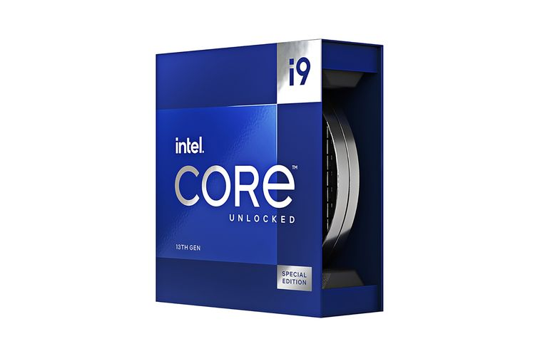

Intel Core Gen 13 Diluncurkan, Core i9-13900K Jadi Unggulan

Dalam ajang Intel Innovation, Intel mengumumkan generasi ke-13 dari
Intel Core, dengan produk unggulannya yaitu Intel Core i9-13900K, yang
mereka klaim sebagai prosesor desktop tercepat di dunia. Keluarga 13 th
Gen Intel Core terbaru ini mencakup enam prosesor desktop unlocked yang
memiliki hingga 24 core dan 32 thread serta clock speed hingga 5,8 GHz.
Spesifikasi ini, menurut Intel, dapat bisa memberikan pengalaman gaming,
streaming, dan perekaman terbaik.
Mengutip siaran pers, Kamis (29/9/2022), diawali dengan perilisan
prosesor Intel Core "K", keluarga prosesor desktop Intel Core Gen 13
akan terdiri dari 22 prosesor dan lebih dari 125 system design dari para
mitra. Para penggemar juga dapat memanfaatkan peningkatan kinerja
prosesor Intel Core Gen 13 dengan chipset motherboard Intel 600 yang ada
saat ini, atau seri baru Intel 700. Dikombinasikan dengan dukungan
terhadap memori DDR5 terbaru dan tetap kompetibel dengan memori DDR4,
pengguna dapat menikmati manfaat 13 th Gen Intel Core sambil
menyesuaikan pengaturan berdasarkan fitur dan preferensi anggaran
masing-masing.
"Kami sekali lagi meningkatkan standar kinerja PC dengan hadirnya
prosesor flagship 13 th Gen Intel Core," kata Michelle Johnston
Holthaus, executive vice president and general manager Client Computing
Group, Intel. Prosesor desktop Intel Core Gen 13 dibangun di atas
teknologi proses Intel 7 serta kinerja arsitektur hybrid x86.